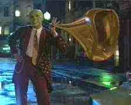

Mask, The A-, AUS/1994/Color/Widescreen 1.77:1/Stereo Surround/101 minutes/Directed by Charles Russell/Starring Jim Carrey, Cameron Diaz/New Line/32 Chaps/CLV/THX/$39.99 What a delightful surprise! Expecting little more than some snazzy special effects and some obvious mugging from Jim Carrey, The Mask delivered a sharp rendering of a comic strip with abashed enthusiasm and perfect pacing. Director Russell has not let the special effects obliterate a sense of character and story. The special effects are just fantastic. Whenever Carrey dons the mask he is a whirling dervish of cartoon energy, a direct inspiration from the pen and imagination of the zany cartoons of Chuck Jones. Even his faithful pup Milo gets to play out some moments in the mask to grand effect. Most important is the fact that the film never loses its sense of fun. The musical number are equally delightful. They have extraordinary verve and the music is infectious. Jim Carrey is positively charming as Stanley Ipkiss and hilarious when he becomes The Mask. Carrey and special effects used to create The Mask  illusions seem made for each other. The actor’s posturing is precisely in character and he delivers his lines to memorable effect. Carrey is so good I can’t wait to see him in a straight dramatic role, should that come to pass. Cameron Diaz is a welcome fresh face playing chanteuse Tina Carlyle. She is well suited to this material and it will remain to see what range she displays in future films.The colors on The Mask are breathtaking. They jump off the screen with the same dynamic energy that is invested in the title character. The comic book palette provides a feast for the laser lover. All the images are reference quality. The night scenes have deep black and brightly lit central images. There are no obvious artifacts of the NTSC system to detract from the perfection of this disc presentation. The soundtrack has been given a dynamite treatment. The bass pounding is tight and the surround effects perfectly locate the arc of action. The Mask will provide enchanting entertainment through numerous visits and I can’t think of a better disc to show off the merits of home theater either. |